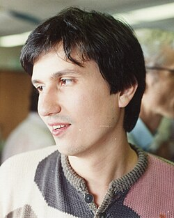

Person
Maxim Kontsevich

Portrait: George Bergman, CC BY-SA 4.0, Wikimedia Commons.
Events (6)
- 1990Vassiliev invariants
developer · Topology
- 1991Two-dimensional gravity and the moduli space of curves
developer · Geometry
- 1994Gromov-Witten / quantum cohomology
developer · Algebraic geometry
- 1994Homological mirror symmetry and the Fukaya category
originator · Geometry
- 1997Deformation quantization of Poisson manifolds
originator · Algebra
- 2025Non-rationality of cubic fourfolds attacked via mirror-symmetry-inspired Hodge atoms
originator · Algebraic geometry